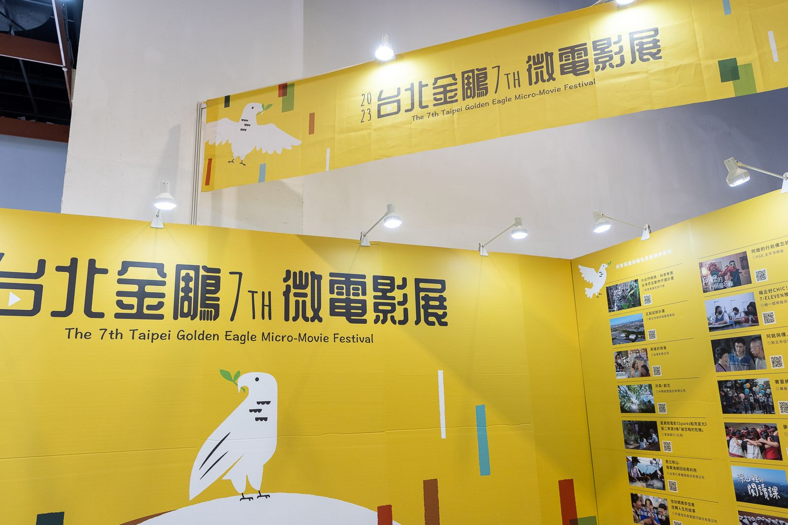

ESG Micro-Movie Festival
TAISE / The 7th Taipei Golden Eagle Micro-Movie Festival
From the ceremony’s opening video to the final ESG Awards report, I supported the 7th Taipei Golden Eagle Micro-Movie Festival at SIC, TAISE. Through creative storytelling and structured ESG analysis, the project helped drive an 85% increase in corporate participation in ESG initiatives and deepened public engagement with climate education and action.
Deliverable
The 7th TGE Micro-Movie Festival — Opening Video & ESG Awards Report
Impact highlights:
- Drove an 85% increase in corporate participation in ESG initiatives through effective reporting and strategic engagement with participating companies.
- Boosted public awareness through creative outreach around the festival, leading to greater participation in climate change education and ESG storytelling.
- Delivered a comprehensive ESG Awards report, analyzing companies’ sustainability goals and microfilm content to capture how ESG messages were communicated on screen.
Gallery
Highlights from the festival

Gallery
Highlights from the Report
Behind the scenes